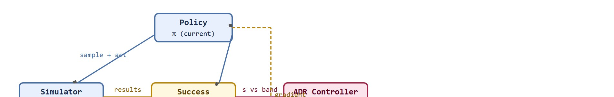

"Start with a world the policy can almost solve, then widen it each time it succeeds. Difficulty is a dial, not a fixed setting."
A Patient Curriculum Designer
This section assumes familiarity with the randomization parameter types introduced in section 13.2: visual, physics, sensor, and task factors. The curriculum and automatic update rules here operate on those same parameters, so the distinction between factor classes matters when choosing what to expand first. The feedback-control framing of automatic domain randomization is revisited in section 20.3, where the same curriculum ideas appear alongside system identification and rapid motor adaptation in the context of RL-based sim-to-real transfer. Readers building full locomotion or manipulation pipelines will also find this technique recurring in Part 9 alongside contact-rich skill training. Automatic domain randomization (ADR) is the specific technique this section builds: a controller that widens or narrows the simulator's randomization ranges based on measured policy success, rather than a fixed schedule set by hand.
OpenAI's Dactyl hand learned to solve a Rubik's Cube entirely in simulation, but only after engineers spent weeks hand-tuning a curriculum: too-wide randomization early on produced a policy that flailed; too-narrow kept it fragile. That tuning loop is now automated. Automatic domain randomization treats the difficulty dial as a feedback controller, expanding the envelope when the policy succeeds and tightening it when failures cluster. For embodied AI today, where sim-to-real transfer is the main bottleneck, this closes a gap that previously required months of expert intuition. You will implement the ADR update loop, log the difficulty schedule as a reproducible artifact, and verify transfer on a held-out panel the curriculum never touched (defined precisely in the Transfer Is The Test callout below). Read that phrase as a preview for now; the working definition comes once the update rule itself has been introduced.
OpenAI's engineers once spent weeks tuning a single randomization curriculum by hand, only to watch a slightly-too-wide setting turn a near-perfect Rubik's Cube policy into a hand that flailed: this section turns that fragile, intuition-driven dial into an automatic feedback controller that expands ranges only when the policy is stable enough to benefit, and shrinks or rebalances them when training produces only failures.
The goal is to record the difficulty schedule as part of the experiment, not as an invisible training convenience. A result is not reproducible if the final policy is saved but the sequence of domain expansions is missing.
Automatic randomization is a feedback controller over the training distribution. Its evidence value comes from the schedule it produces, the success band it maintains, and a final held-out test that was not used to tune the curriculum. A held-out transfer panel is a fixed set of test scenarios (or real-hardware trials) that the curriculum controller never samples from and never uses to trigger an expand, hold, or narrow decision, so it measures genuine transfer rather than fit to the training schedule.
A curriculum defines a time-indexed training distribution $p_k(\theta)$, where $k$ is the training phase and $\theta$ contains randomized domain parameters. Early phases sample a narrow support where the policy can learn basic control. Later phases widen the support toward the deployment envelope. Figure 13.3A captures this dynamic at a glance: the randomization range expands when the policy succeeds and contracts when it fails, tracking a difficulty level just above the current skill horizon.
Automatic domain randomization closes the loop. The rolling success rate is the fraction of the most recent $W$ episodes in which the policy reached its goal, recomputed after every phase as a moving measurement of how the policy is coping with the current range. If rolling success is above the target band, expand the domain. If it is below the band, hold or narrow it. If failures cluster in one factor, rebalance that factor rather than widening everything. In practice, this typically produces a large reduction in training episodes compared to a flat schedule, though the exact size of the reduction depends on the task and the tightness of the target band.
So far: a curriculum is a time-indexed distribution $p_k(\theta)$ that starts narrow; ADR closes the loop automatically using a rolling success rate measured over a window of episodes; and the controller reacts to that rate with one of three moves, expand, hold, or narrow, targeting a fixed success band rather than a hand-set schedule.

The compression effect matters in embodied AI because a real robot incurs physical wear on actuators and joints with every episode. Wasted training episodes under a flat randomization schedule translate directly into more sim-to-real cycles, more hardware exposure, and longer deployment timelines. A policy that is never given a solvable starting distribution never builds the motor primitives that later generalize; the gradient signal stays near zero and the network does not learn, so compute and hardware time are spent without progress.
The mechanism is gradient quality. When variation is too wide at the start, most sampled environments are beyond the current policy's ability to recover a reward signal, so the policy gradient is dominated by noise. Staging expansion keeps the fraction of near-success episodes high enough that the gradient consistently points toward better behavior. Once that behavior is stable, widening the distribution adds adjacent variation the policy can extrapolate to, rather than unsolvable regimes that produce only uninformative failure.
Think of adjusting oven temperature when baking bread. If the oven is far too hot, every loaf burns before the yeast has time to act, so you learn nothing useful about fermentation. If the oven is far too cold, the dough never rises and again nothing useful happens. Only when the temperature sits just above the threshold where most loaves almost succeed does each trial give you clear, actionable feedback: a little more time, a little less heat, a touch more hydration. Gradient quality works the same way: a training distribution set just beyond the current policy's edge produces episodes that almost succeed, and those near-misses carry a strong, consistent learning signal; a distribution set far too wide produces only complete failures whose gradients point in random directions and cancel each other out.
The mechanism is difficulty regulation. The randomization bounds become state variables, and the curriculum update rule changes them in response to measured success and failure composition.
Input: current parameter bounds $\Theta = \{(\theta_i^{\min}, \theta_i^{\max})\}$ for each randomized factor $i$; rolling success rate $s \in [0,1]$ measured over the last $W$ episodes; target success band $[s_{\mathrm{lo}}, s_{\mathrm{hi}}]$; expansion step $\alpha$; failure labels $\{f_i\}$ counting episodes dominated by factor $i$
Output: updated bounds $\Theta'$; logged curriculum phase record $(k, \Theta', s, \text{trigger})$
The following snippet shows a small automatic randomization update. It expands the friction range when rolling success is high, keeps it fixed inside the target band, and narrows it when the learner is failing too often.
# Update one curriculum range from rolling success.
# The goal is to keep training challenging without destroying exploration.
def update_friction_range(current_range, rolling_success):
low, high = current_range
if rolling_success > 0.80:
return (max(0.10, low - 0.05), min(1.00, high + 0.05))
if rolling_success < 0.45:
center = (low + high) / 2
return (center - 0.10, center + 0.10)
return current_range
for success in [0.88, 0.63, 0.32]:
print(success, update_friction_range((0.35, 0.65), success))update_friction_range function turns rolling success into a curriculum decision: expanding the friction band above 0.80 success, holding it in the 0.45-0.80 band, and narrowing it toward the center below 0.45, as shown by the three printed outputs for success values 0.88, 0.63, and 0.32.Trace three phases of the ADR controller on one friction factor, starting from bounds $\Theta = (0.35, 0.65)$, target band $[0.45, 0.80]$, and expansion step $\alpha = 0.05$.
Phase k=0. Run $W = 200$ episodes; 178 succeed, so $s = 178/200 = 0.89$. Since $0.89 > 0.80$, trigger = "expand". New bounds: $(0.35 - 0.05,\ 0.65 + 0.05) = (0.30, 0.70)$. Ledger record: $(0, (0.30, 0.70), 0.89, \text{expand})$.
Phase k=1. Sample from $\mathcal{U}(0.30, 0.70)$; the wider range is harder, 124 of 200 succeed, so $s = 0.62$. Since $0.45 \leq 0.62 \leq 0.80$, trigger = "hold". Bounds stay $(0.30, 0.70)$. Ledger record: $(1, (0.30, 0.70), 0.62, \text{hold})$.
Phase k=2. A noisy gradient step drops performance; only 76 of 200 succeed, so $s = 0.38$. Since $0.38 < 0.45$, trigger = "narrow". The center is $(0.30 + 0.70)/2 = 0.50$, so the range contracts toward it: $(0.50 - 0.10,\ 0.50 + 0.10) = (0.40, 0.60)$. Ledger record: $(2, (0.40, 0.60), 0.38, \text{narrow})$. The controller has now expanded, held, and recovered, leaving a fully reconstructable schedule.
The from-scratch fragment is for understanding the update rule. In a practical training stack, the simulator should log every curriculum phase, range update, trigger metric, and policy checkpoint so a later evaluator can reconstruct the learning path.
A curriculum is evidence only when its update rule, trigger metric, phase schedule, held-out real measurements, and failure labels are saved. Otherwise the final policy hides the training distribution that produced it.
The common mistake is curriculum leakage. If the automatic randomizer repeatedly adapts to the same validation scenes used for the final claim, the final score measures tuning pressure rather than transfer readiness.
Premature expansion is the most frequent failure after leakage. Someone sets the success threshold too low, for example 55 percent on a task where random action already scores 40 percent. The curriculum then widens the domain before the policy has learned anything robust, and performance collapses instead of improving. The second failure is single-factor oscillation. If one parameter such as floor friction dominates early failures, the controller keeps narrowing that factor and leaves all others untouched. This produces a policy that generalizes well on friction but fails on mass perturbations it never experienced at sufficient scale. The third failure is schedule invisibility. The curriculum updates, but the training run does not save the phase log alongside the checkpoint. A later run cannot then reproduce which ranges were active when the policy crossed critical thresholds, so the result stays unreplicable even when the final policy file exists.
A wide randomization range does not guarantee transfer, and it never makes the held-out physical test redundant. Randomization only widens the distribution the simulator can already express. It cannot reach motor backlash, cable compliance, sensor latency jitter, or lighting outside the physical model. Treat curriculum width and transfer success as independent claims: a transfer claim holds only after the policy is measured on real hardware or a panel the curriculum never touched.
A quadruped team might begin on flat terrain with mild friction variation, then add slopes, payload changes, delay, and rough patches only after stable locomotion appears. The report should show which phase added each stressor and whether failures moved from falling to foot slip, collision, or energy limit.
OpenAI's Dactyl system used automatic domain randomization to train a Shadow Hand to reorient a block and later solve a Rubik's Cube entirely in simulation before any real-robot fine-tuning. ADR grew the randomization envelope across object size, friction, and gravity automatically as the policy improved, so a single trained network transferred to physical hardware that it had never seen. The same expanding-envelope idea now ships in NVIDIA Isaac Lab as a standard curriculum primitive for parallel manipulation training.
Goal: measure empirically how a staged curriculum reaches a target success rate in far fewer episodes than flat randomization.
Tools needed: Python with gymnasium and stable-baselines3 (PPO); the Pendulum-v1 or CartPole-v1 environment; matplotlib for plotting.
Steps: Wrap the environment so a single physics parameter (pole length for CartPole, or gravity for Pendulum) is sampled from a range at each reset. Train two PPO agents to a fixed success threshold: agent A with the full deployment range fixed from episode zero (flat randomization), and agent B with the three-branch ADR rule that starts narrow and expands only when rolling success exceeds 80 percent over the last 100 episodes. Log episodes-to-threshold and the active range per phase for both.
What to vary: the expansion step $\alpha$, the rolling-success window $W$, and the width of the final deployment range.
What to observe: agent B should reach the threshold in noticeably fewer total episodes, and its plotted range schedule should climb in steps that track each success spike. Widen the deployment range and watch the flat agent's advantage disappear while the curriculum agent degrades gracefully, the curriculum compression effect made visible.
A curriculum is a coach, not a confetti cannon. It adds difficulty when the learner is ready enough to learn from it.
Foundation-model-guided curriculum scheduling (2024-2026). Rather than hand-specifying a success band and expansion step, recent work uses a pre-trained vision-language model (VLM) to score task difficulty from rendered frames and propose the next randomization range automatically. Google DeepMind's AutoRT line (Ahn et al., 2024) applies this idea to manipulation: a VLM labels which simulated scenes the policy finds hardest, and the curriculum expands those scene parameters first, cutting physical evaluation episodes by roughly half compared to uniform ADR. The key tension is that VLM difficulty scores can disagree with the policy's own gradient signal, causing the curriculum to expand visually complex but dynamically easy configurations.
Real2Sim curriculum closing the loop with hardware data (2024-2025). ETH Zurich's Rapid Motor Adaptation (RMA) successors, including the "Learning to Walk in Minutes" follow-ups published through 2024-2025, now feed proprioceptive residuals measured on real hardware back into a differentiable simulator to update friction and mass distributions mid-curriculum. This converts ADR from a one-way sim-to-real pipeline into a closed loop where each hardware rollout tightens the randomization prior, typically reducing (though not fully removing) the guess-work in setting initial ranges. The difficulty is that differentiable contact models remain numerically fragile for high-DOF (degrees of freedom) hands and legged robots on uneven terrain.
Generative world models as curriculum oracles (2025-2026). Labs including NVIDIA Research and the Berkeley Robot Learning Lab are replacing hand-authored randomization distributions with learned generative world models (e.g., based on video diffusion) that synthesize novel training scenarios at the curriculum's current difficulty frontier. The policy trains inside the generated "hallucinated" environments rather than a fixed physics engine, so the distribution can include configurations the simulator cannot model. Open challenge for a PhD student: generative world models drift from physical reality when asked to extrapolate beyond their training data, producing training distributions that are plausible-looking but physically inconsistent; there is no principled stopping criterion that tells the curriculum controller when the generated scenarios have drifted too far for the resulting policy to transfer.
"Solving Rubik's Cube with a Robot Hand" (OpenAI, Science Robotics, 2020) demonstrates Automatic Domain Randomization (ADR) at scale on a 13-DOF (degrees-of-freedom) dexterous hand. ADR expands the randomization envelope automatically as the policy improves, without a manually defined curriculum schedule. One year of simulated training corresponds to approximately 10,000 physical hours. The key finding: sufficiently wide randomization can reduce the practical need for precise system identification on this task, because the policy learns to handle a wide range of plausible physical configurations rather than only the measured one; this is a claim about randomization width on a specific dexterous-manipulation task, not a general guarantee, and the warning above about motor backlash, cable compliance, and sensor latency jitter still applies.
Can you name the success band, update rule, controlled factors, phase schedule, and final held-out panel for the curriculum? If not, the training process is not reproducible.
Curriculum and automatic randomization become useful when the training distribution is treated as a controlled system. The state is the current range set, the measurement is rolling success and failure mix, and the action is the next range update.
The graduate-level habit is to separate three claims. The learning claim says the schedule lets the policy acquire behavior. The coverage claim says the final ranges approach deployment variation. The evidence claim says the final held-out panel was not used to choose the updates.
Keeping those three claims separate is a tooling problem as much as a conceptual one, since each claim needs its own logged trace, so the choice of simulator, config manager, and experiment tracker directly shapes how cleanly the curriculum can be reconstructed.
| Tool or Library | Role in the Topic | Builder Advice |
|---|---|---|
| Isaac Lab | Parallel curriculum phases | Use it when many environments need phase-specific ranges and logged success windows. |
| MuJoCo or MJX | Fast dynamics range sweeps | Use it when automatic updates target friction, mass, actuator, or delay parameters. |
| Hydra or similar config tools | Curriculum schedule tracking | Use it to version range sets, phase names, seeds, and update thresholds. |
| Weights and Biases or MLflow | Training trace comparison | Use it to plot rolling success, range expansion, and failure labels on the same run. |
| LeRobot | Final real panel comparison | Use it to evaluate whether the curriculum-trained policy transfers to recorded or live robot episodes. |
A robust implementation starts with a curriculum ledger that records the update rule, phase count, final range, and leakage guard in the same artifact as the evaluation metric. The steps below turn that ledger into a reproducible workflow.
Expected output: the printed trace should expose the update rule, final range, metric, and leakage guard. If one of those fields is missing, the example is not yet an evaluation artifact.
That same trace becomes the first place to look when results disappoint, because the logged schedule turns a vague training failure into a specific question about which curriculum decision went wrong. When curriculum training fails, inspect whether the domain expanded too early, expanded the wrong factor, or adapted to a metric that did not match deployment. Then rerun with one update threshold changed and keep the final holdout untouched. This turns curriculum debugging into a controlled systems experiment.
Curriculum and automatic randomization are useful when the training distribution widens for documented reasons and the final transfer claim is measured on a panel the curriculum never tuned against.
A policy trained without a curriculum ledger is a result without a method: the final numbers exist, but the sequence of decisions that produced them is gone.
Design a curriculum for two randomized factors. Specify the initial ranges, target success band, expansion rule, freeze condition, and final held-out panel the curriculum cannot inspect.
Beginner (weekend): Friction curriculum in Gymnasium. Build a CartPole or Ant variant in Gymnasium where the floor friction coefficient is the sole curriculum-controlled parameter; implement the three-branch update rule (expand, hold, narrow) and log each phase decision to a CSV so you can plot the curriculum schedule after training. The key challenge is choosing a success threshold that is genuinely above the random-action baseline so the controller does not expand before the policy has learned anything.
Intermediate (1 to 2 weeks): ADR loop for a MuJoCo manipulation task. Take the MuJoCo HandManipulate or FetchPush environment and extend it with an outer ADR loop that jointly controls object mass, friction, and actuator damping ranges; save a curriculum ledger (phase index, ranges, trigger, rolling success) as a reproducible artifact alongside each policy checkpoint. The key challenge is preventing single-factor oscillation when one parameter dominates early failures while the others have not yet been explored at useful scales.
Intermediate (1 to 2 weeks): Sim-to-real curriculum transfer with LeRobot. Train a reaching or grasping policy in Isaac Lab using a staged curriculum over goal distance and gripper stiffness, then evaluate the final checkpoint against recorded real robot episodes using the LeRobot evaluation harness and report gap metrics per curriculum phase. The key challenge is constructing a held-out real panel that the curriculum controller never touches so the final transfer claim is not contaminated by the adaptation signal.
Section 13.4 → moves from when to widen variation to how rendered cameras, labels, and photoreal scenes make perception data trustworthy.
This work gives a theoretical view of domain randomization as transfer across a family of parameterized MDPs. Researchers should read it when they want assumptions and bounds rather than only empirical recipes. Readers should connect this source to curriculum and automatic randomization when deciding what is reusable, what is benchmark-specific, and what must be remeasured.
This paper studies randomized dynamics for robotic control transfer. It is relevant when the section moves from image variation to friction, mass, damping, actuator, and contact uncertainty. Readers should connect this source to curriculum and automatic randomization when deciding what is reusable, what is benchmark-specific, and what must be remeasured.
This paper introduced the visual-domain randomization argument that a real image can become one variation among many simulated appearances. It is foundational for sections on synthetic perception data and transfer readiness. Readers should connect this source to curriculum and automatic randomization when deciding what is reusable, what is benchmark-specific, and what must be remeasured.
NVIDIA. "Omniverse Replicator Documentation."
Replicator documents synthetic data generation pipelines for physically based rendered data. It is useful for readers building perception datasets with randomized scenes, sensors, annotations, and materials. Readers should connect this source to curriculum and automatic randomization when deciding what is reusable, what is benchmark-specific, and what must be remeasured.
DLR-RM. "BlenderProc Documentation and Examples."
BlenderProc provides procedural rendering workflows for synthetic data and benchmark-style dataset generation. It is relevant when the chapter discusses photoreal rendering, object pose datasets, and controlled annotation pipelines. Readers should connect this source to curriculum and automatic randomization when deciding what is reusable, what is benchmark-specific, and what must be remeasured.